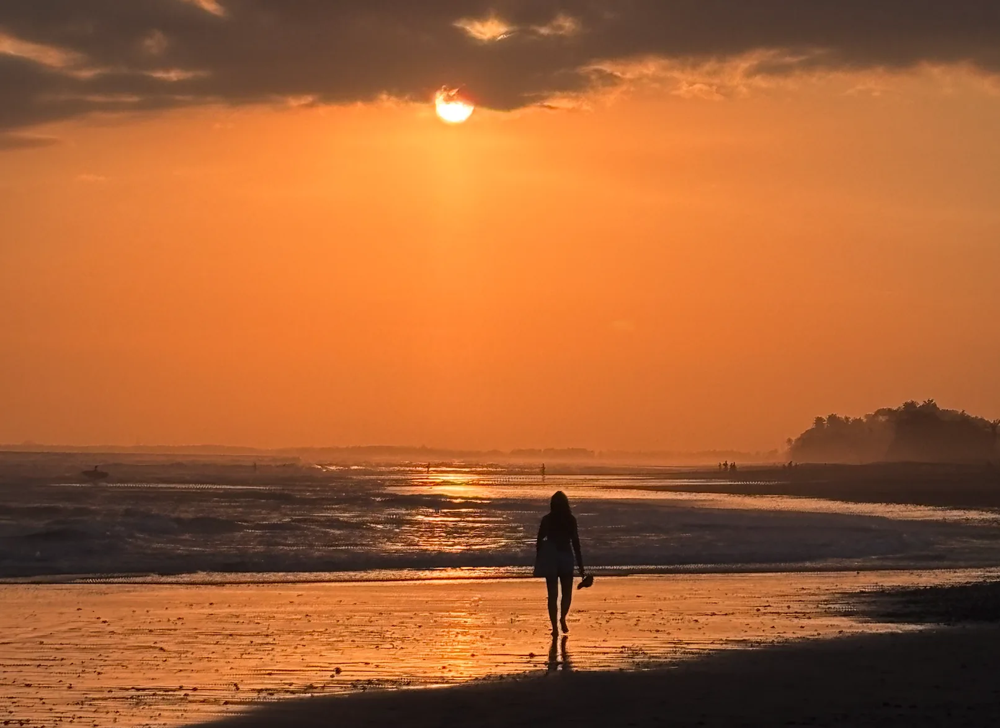
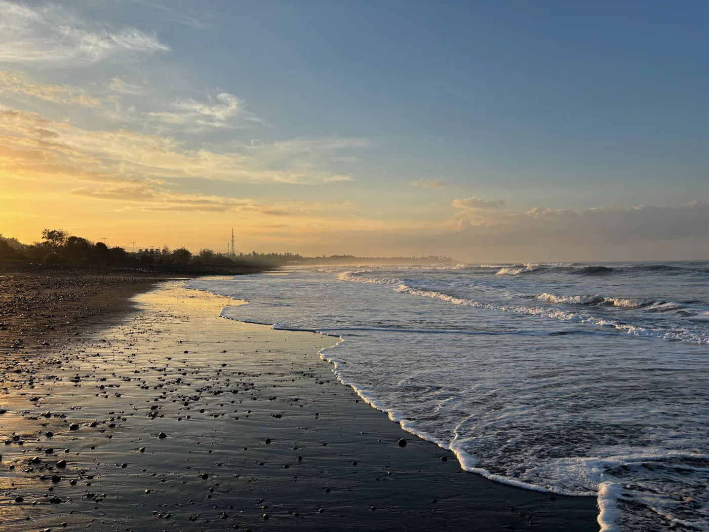
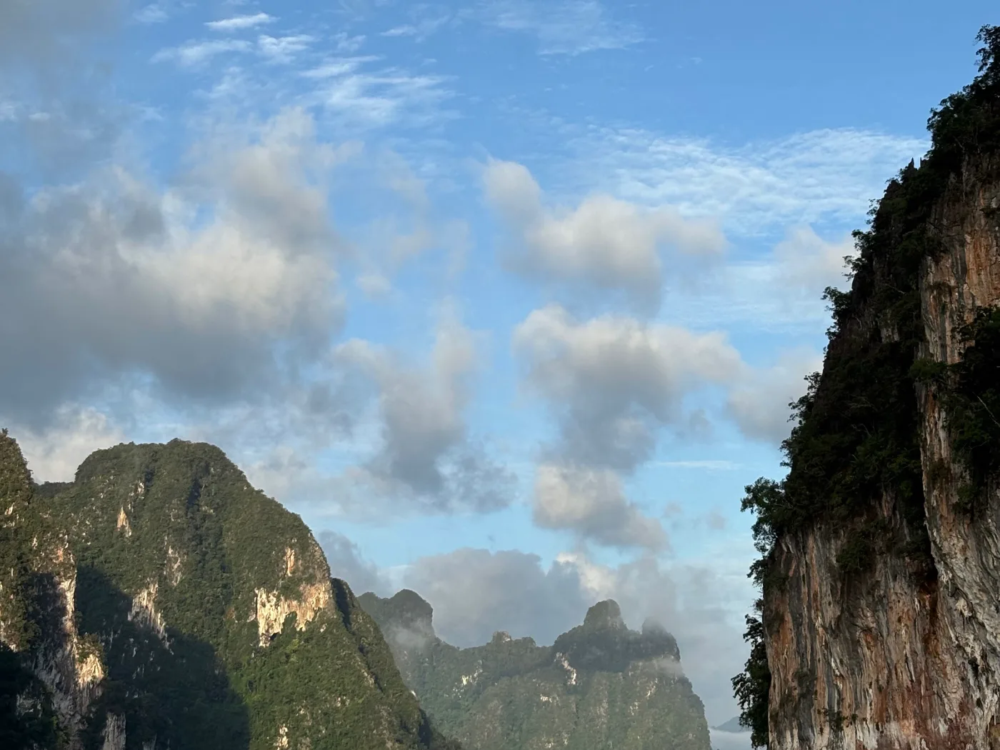
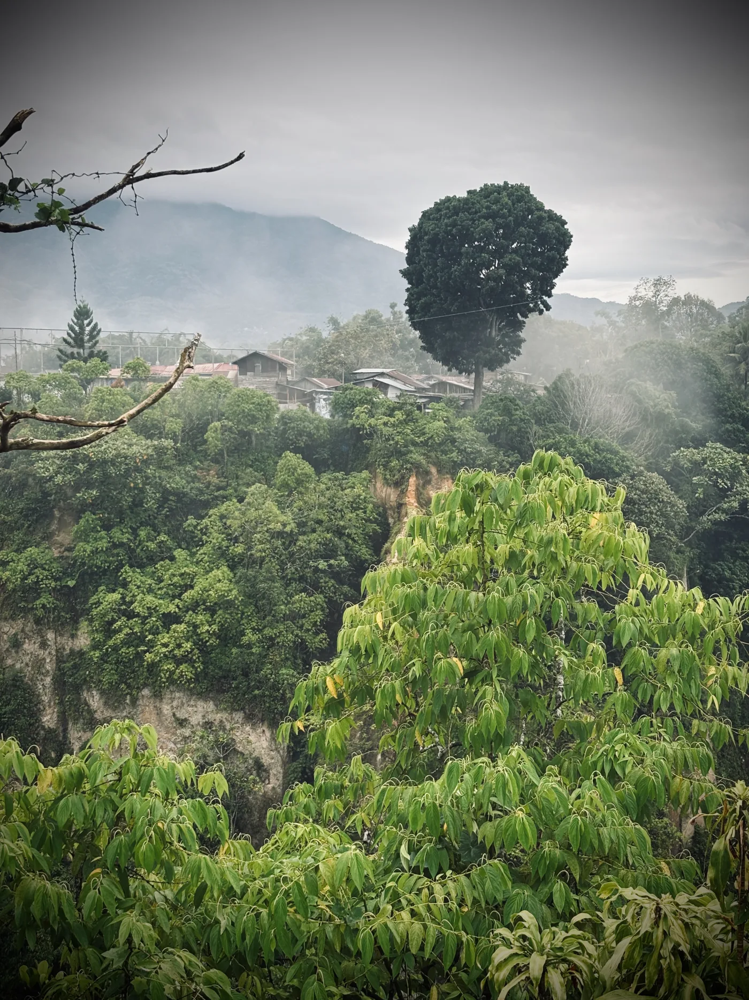

Slow miles, well loved. Photo albums and field notes from wherever the four of us point the car next.
Explore the albums Where we’re going nextNo bucket lists, no checkpoints — just the places that asked us to stay a little longer.

Medewi’s long slow lefts, Sebatu’s reef, and an Ubud finish — the first family surf trip with boards out every day.
View the albumFjords, glacial lakes, and roads that go quiet for hours. Milford Sound does not photograph this well by accident — we just happened to be standing there.
View the album
Long-tail boats across Cheow Lan Lake, limestone towers rising straight out of green water, and a sunset that ended the day before we were ready.
View the albumFirst light on the Bipenggou peaks, red-stone riverbeds, and mountain passes between Li and Xiao. Thin air, thick silence.
View the album
Canyon mist at Ngarai Sianok, village rooftops under a single towering tree, and the slow rhythm of West Sumatran hills.
View the albumEvery album, including works in progress: the full photo gallery
Short, honest write-ups from each trip — what surprised us, what we’d do differently next time.
We visited Cheow Lan on a day trip and left wishing we’d slept on the water. First long-tail out beats the crowds to the good light — and book the floating bungalow.
Khao Sok albumThe South Island runs on its own clock. Plan half of what you think fits, stop when the light turns, and give Milford the early, unhurried drive it deserves.
New Zealand albumAltitude in Chuanxi sneaks up on you. Take the passes slow, eat hot food, and let the red stone beach be a moment — not a checklist item.
Chuanxi albumTrips move from idea to itinerary to airport. These are the ones taking shape.
Everywhere the four of us have pointed the car — so far.
Future trips join the map when the itinerary is booked. Pins link to their albums and trip pages.
One letter per trip, sent when the photos are sorted. The good light, the wrong turns, and what we’d do differently.
The next postcard finds you when the road does. Until then — safe travels.